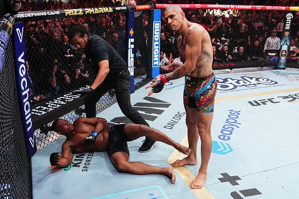
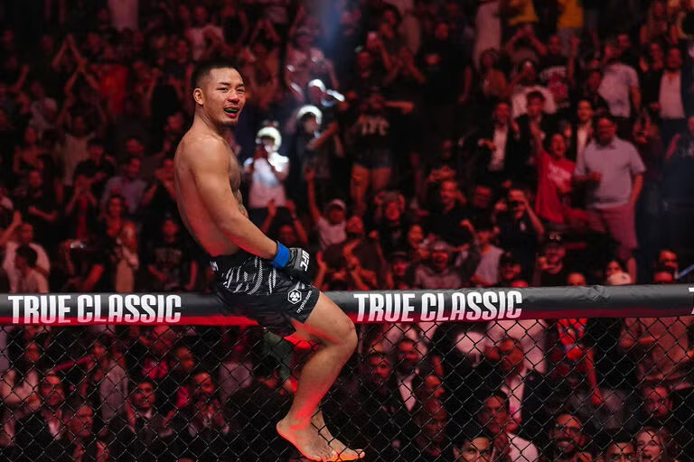

This website combines my interest in mixed martial arts with my current path of kinesiology
Combat sports have always stood out to me because they demand everything at once discipline, conditioning, strategy, and skill all under pressure. It is one of the few environments where physical ability and decision making are tested simultaneously, and that balance is what drew me in. Over time, that interest evolved into more than just watching or training, it became about understanding performance on a deeper level, both physically and analytically.
While I was not able to incldue my boxing footage due to file size limitations, it represents where this all started for me. Training and experiencing combat sports firsthand gave me a completely different persepective, and for the last 5 years I have had a constant pursuit of further investing myself into this sport.

Elite striker known for knockout power and precision.
Dynamic striker with high accuracy and creative movement.

High pace fighter with strong offensive output.
This analysis uses Python to evaluate UFC fighter performance metrics such as striking efficiency, takedown averages, reach and height. The following data can be found by scrolling down within the notebok
View Full NotebookAs a reward for making it to the bottom of my page you get to interact and play with my favorite fighter Alex Periera and help him reach his heavyweight belt
Open Scratch Game